전체 20건
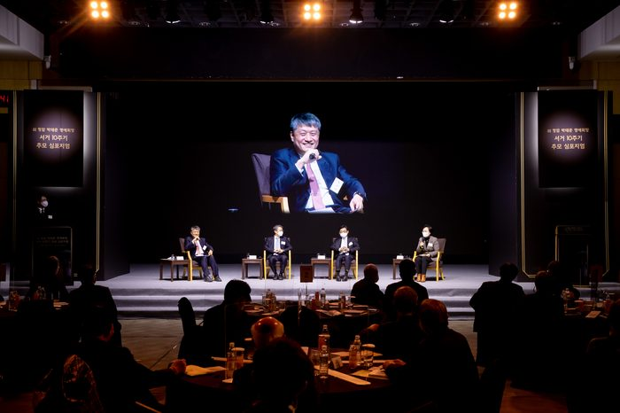
故 청암 박태준 설립이사장 서거 10주기 심포지엄
2021-12-08
■ 행 사 명: 故 청암 박태준 설립이사장 서거 10주기 추모 심포지엄■ 주 제: 영원한 울림, Spirit for the Future■ 프로그램발제 I. 리더십과 경제발전 - ..
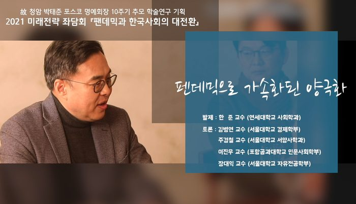
미래전략 좌담회 시리즈 5편. 팬데믹으로 가속화된 양극화 - 한준 교수(연세대 사회학과)
2021-04-09
코로나19는 한국 사회에서 건강과 방역의 문제뿐만 아니라 21세기 들어 심각한 문제로 제기된 양극화와 불평등 심화를 가속화하고 있다. 취약 집단의 감염 집중 가능성, 비대면 학교 교육 및 사교육 증가 등으로 인한 저소득층�..
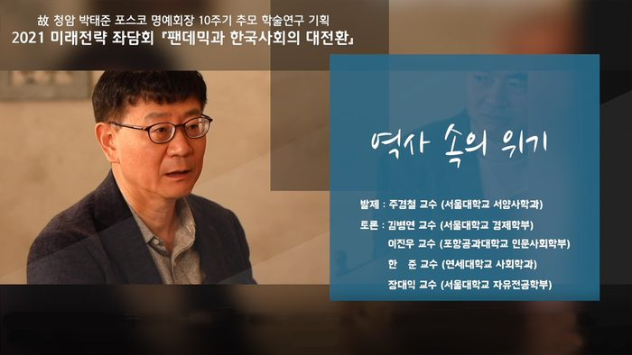
미래전략 좌담회 시리즈 5편. 팬데믹으로 가속화된 양극화 - 한준 교수(연세대 사회학과)
2021-04-02
인류 역사는 재앙과 위기의 연속이었다. 천재지변, 질병, 전쟁 등 인간 사회를 괴롭히는 요소들이 매우 다양하다. 코로나 19 사태는 그와 같은 연속적인 재앙의 역사의 한 변이에 속하는데, 지난 인류 역사에서 각 사회는 이런 �..
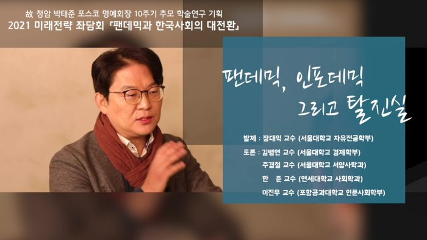
미래전략좌담회 시리즈3.팬데믹, 인포데믹 그리고 탈진실
2021-03-27
코로나19가 인포데믹(거짓정보의 집단감염병)을 낳고 있다. 마스크 필터 재료와 화장지의 재료가 동일하기 때문에 화장지가 곧 동날 것이라는 거짓 뉴스가 확산되자 전 세계의 대형 마트가 사재기 전쟁터로 돌변하기도 했다. �..
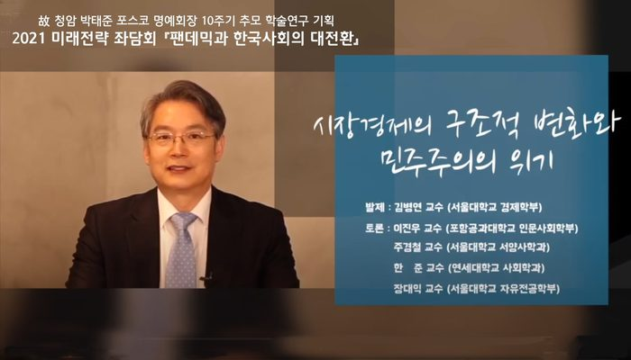
미래전략 좌담회 시리즈 1편. 코로나의 철학적 도전: 당신의 자유는 안전한가? 이진우 교수(포스텍 인문사회학부)
2021-03-22
코로나19 사태는 소득불평등을 더욱 악화시킬 개연성이 크게 존재한다. 이는 경기 부양책으로 완전히 해결하기 어려울 뿐 아니라 이후 회복 과정에서도 저소득층이 부정적인 경제 충격을 경험할 확률이 높다. 그 결과 민주주의�..
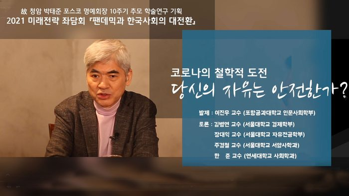
미래전략 좌담회 시리즈 1편. 코로나의 철학적 도전: 당신의 자유는 안전한가? 이진우 교수(포스텍 인문사회학부)
2021-03-15
코로나 위기는 우리에게 안전과 자유의 관계를 새롭게 규정하는 철학적 도전이고, 코로나 위기에 대한 우리의 태도는 결국 안전과 자유의 관계를 결정한다. 안전을 위해 자유를 양보할 것인가? 아니면 자유를 위해 안전의 위협�..
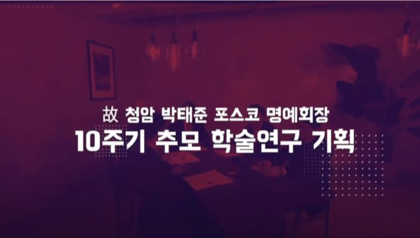
[청암 박태준 추모 10주기] 미래전략 좌담회 시리즈 TEASER
2021-03-10
故 청암 박태준 포스텍 설립이사장(포스코 설립자)의 서거 10주기를 맞아 포스텍 박태준미래전략연구소는 첫 번째 추모행사로 미래전략 좌담회를 개최하였습니다.우리나라를 대표하는 석학 5인이 코로나로 인한 한국사회의 변..
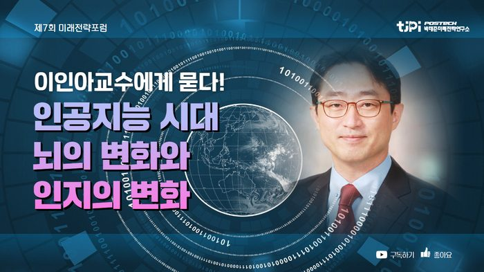
[제7회 미래전략포럼] 인공지능 시대, 뇌의 변화와 인지의 변화 - 이인아 교수
2020-06-05
행 사 명 : 포스텍 박태준미래전략연구소 제7회 미래전략 포럼 주 제 : 인공지능(AI)의 발전과 미래사회 - 『또 다른 지능, 다음 50년의 행복』 기 간 : 2019년 11월 29일(금) 14:00 ~ 17:30 발 표: 인공지능 시대, 뇌의 변�..
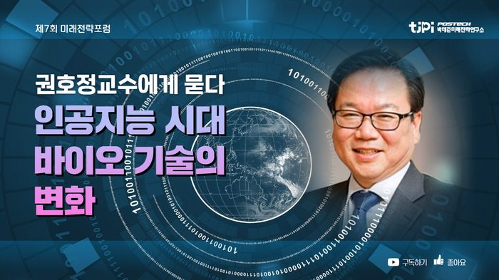
[제7회 미래전략포럼] 인공지능 시대, 뇌의 변화와 인지의 변화 - 이인아 교수
2020-06-05
행 사 명 : 포스텍 박태준미래전략연구소 제7회 미래전략 포럼 주 제 : 인공지능(AI)의 발전과 미래사회 - 『또 다른 지능, 다음 50년의 행복』 기 간 : 2019년 11월 29일(금) 14:00 ~ 17:30 발 표: 권호정 교수(연세대) - 인공지..
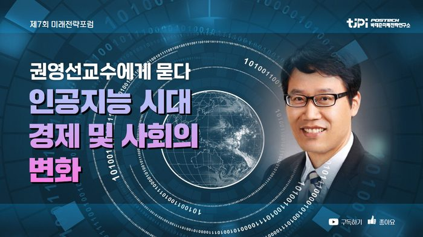
[제7회 미래전략포럼] 인공지능 시대, 경제 및 사회의 변화 - 권영선 교수
2020-06-05
행 사 명 : 포스텍 박태준미래전략연구소 제7회 미래전략 포럼 주 제 : 인공지능(AI)의 발전과 미래사회 - 『또 다른 지능, 다음 50년의 행복』 기 간 : 2019년 11월 29일(금) 14:00 ~ 17:30 발 표: 권영선 교수(카이스트) - ..
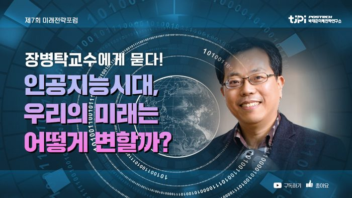
[제7회 미래전략포럼] 인공지능 시대가 가져 올 미래의 변화 - 장병탁 교수
2020-06-05
행 사 명 : 포스텍 박태준미래전략연구소 제7회 미래전략 포럼 주 제 : 인공지능(AI)의 발전과 미래사회 - 『또 다른 지능, 다음 50년의 행복』 기 간 : 2019년 11월 29일(금) 14:00 ~ 17:30 발 표: 장병탁 교수(서울대) - �..
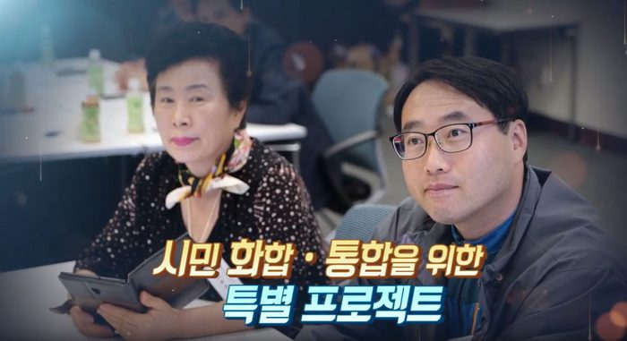
포항시 70인 시민위원회 리더십 역량 강화 교육
2019-10-23
포항시는 시승격 70년 포항시민과 함께 만드는 포항을 위해 ‘포항시 70인 시민위원회’를 조직했으며 포스텍 박태준미래전략연구소에서 리더십 역량 강화 교육을 실시했습니다. 70인 시민위원회의 뜨거운 열정을 소개해드�..
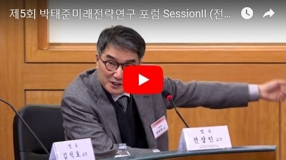
제5회 박태준미래전략연구 포럼 Session II
2018-03-05
제5회 박태준미래전략연구 포럼 ○ 주 제 : 더 나은 한국사회의 길을 찾아 - 촛불 너머의 시민사회와 민주주의○ 기 간 : 2018년 1월 26일(금) 14:00~17:20○ 장 소 : 고려대학교 국제관 115호 국제회의실Session II좌 장: �..
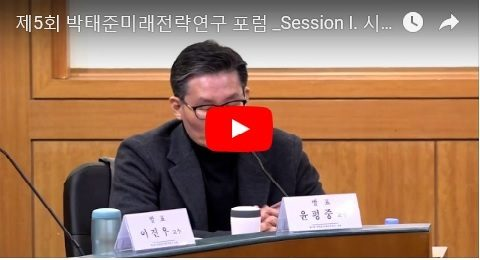
제5회 박태준미래전략연구 포럼 Session II
2018-03-05
제5회 박태준미래전략연구 포럼 ○ 주 제 : 더 나은 한국사회의 길을 찾아 - 촛불 너머의 시민사회와 민주주의○ 기 간 : 2018년 1월 26일(금) 14:00~17:20○ 장 소 : 고려대학교 국제관 115호 국제회의실Session I 개 회 사 :..
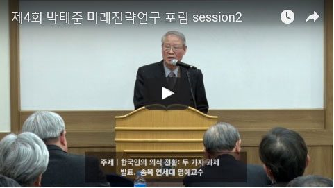
제4회 박태준미래전략연구 포럼 Session II
2017-03-20
제4회 박태준미래전략연구 포럼○ 일 시: 2016년 2월 24일(금 ) 14:30~17:30 ○ 장 소: 서울대 호암교수회관 수련홀 ○ 주 제: 더 나은 한국사회가 되기 위해서 한국인의 의식은 어떻게 바뀌어야 하나? Session I▷ 발표I. 성찰적 의식: 이..
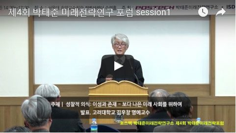
제4회 박태준미래전략연구 포럼 Session II
2017-03-20
제4회 박태준미래전략연구 포럼○ 일 시: 2016년 2월 24일(금 ) 14:30~17:30 ○ 장 소: 서울대 호암교수회관 수련홀 ○ 주 제: 더 나은 한국사회가 되기 위해서 한국인의 의식은 어떻게 바뀌어야 하나? Session I▷ 발표I. 성찰적 의식: 이..
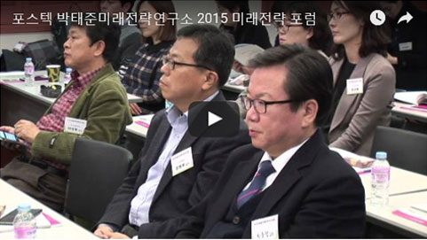
박태준미래전략연구소 2014 미래전략포럼 Session II. 미래 사회의 리더십
2016-01-18
주 제 : '바람직한 한국 행정관료 생성 메커니즘'- 한국 행정관료 엘리트의 생성 : 행정관료의 전문성과 혁신- 행정관료의 충원 및 고용방식 개편- 통일과 행정관료의 역할: 독일통일 과정 사례를 중심으로기 간 : 2015년 12월..
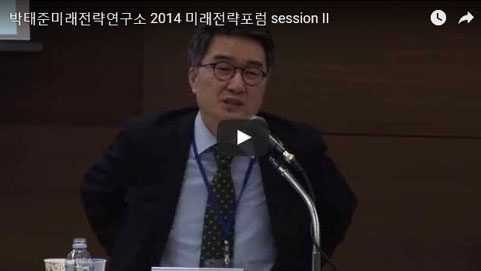
박태준미래전략연구소 2014 미래전략포럼 Session I. 국가 지도자(엘리트) 생성 메커니즘
2015-01-16
▶ Session II. 미래 사회의 리더십 좌 장 : 이진우 교수(스텍) 발 표 : 류석진 교수(서강대), 조홍식 교수(숭실대) 토 론 : 전상인 교수(서울대), 백기복 교수(국민대) 박태준미래전략연구소 2014 미래전략 포럼 주 ..
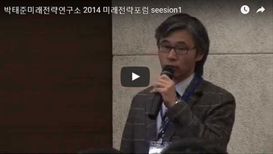
박태준미래전략연구소 2014 미래전략포럼 Session I. 국가 지도자(엘리트) 생성 메커니즘
2015-01-16
▶ Session I. 국가 지도자(엘리트) 생성 메커니즘 좌 장 : 조윤제 교수(서강대) 발 표 : 박길성 교수(고려대), 장덕진 교수(서울대), 최동주 교수(숙명여대) 토 론 : 김동헌 교수(고려대), 김왕배 교수(연세대) 박�..
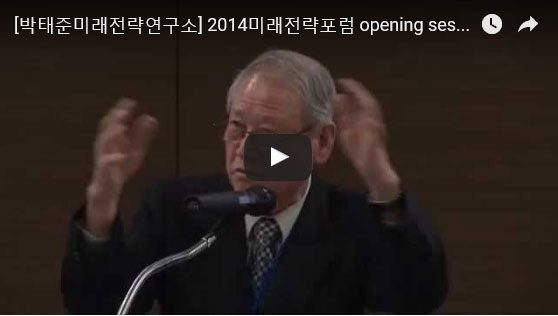
박태준미래전략연구소 2014 미래전략포럼 Session I. 국가 지도자(엘리트) 생성 메커니즘
2015-01-16
▶ Opening Session 개회사 : 최광웅 박태준미래전략연구소장 환영사 : 김용민 포스텍총장 축 사 : 송 복 연세대 명예교수박태준미래전략연구소 2014 미래전략 포럼 주 제 : 21세기 미래리더는 어떻게 배출되는가? - 국가..
※ The publications and records listed here are in Korean. Titles are shown as published.